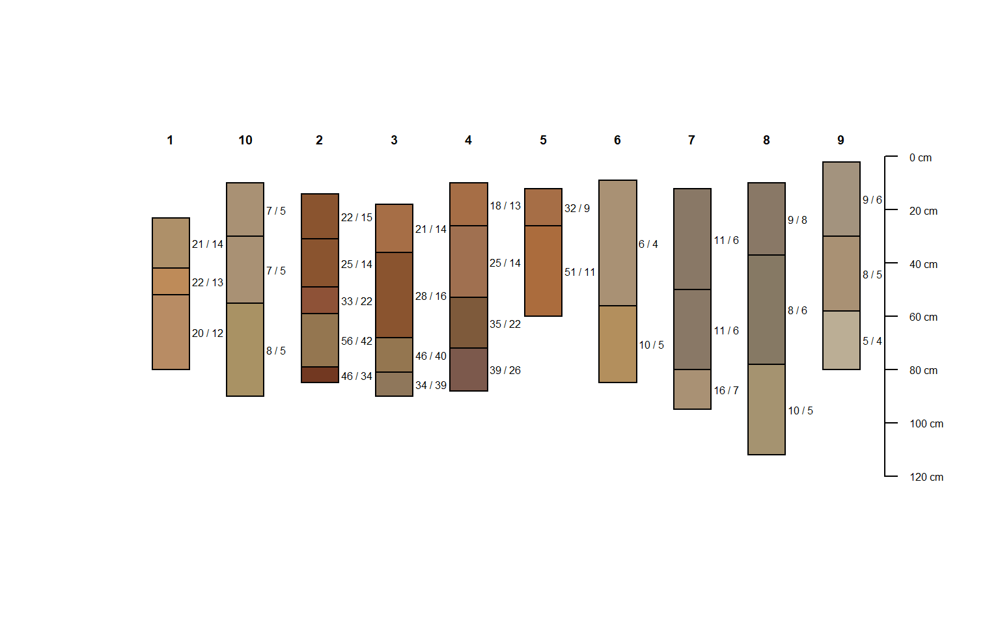
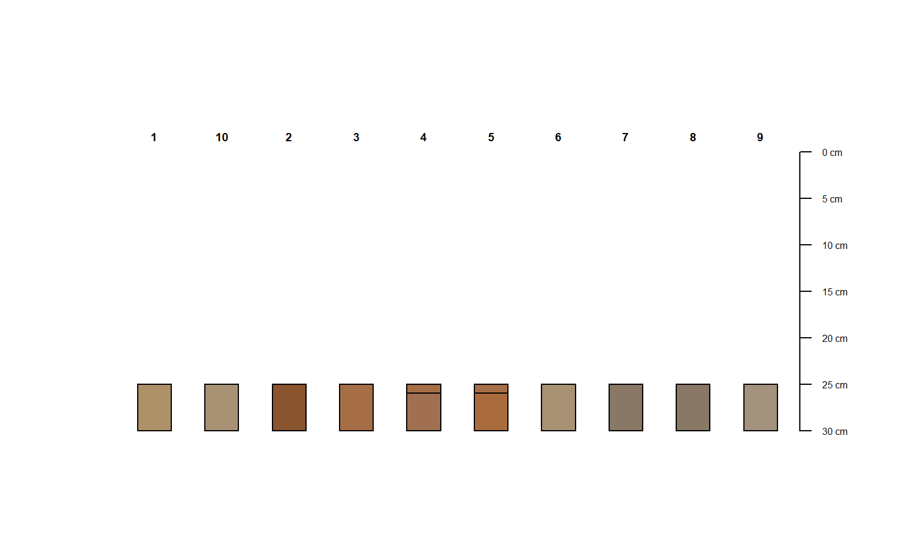
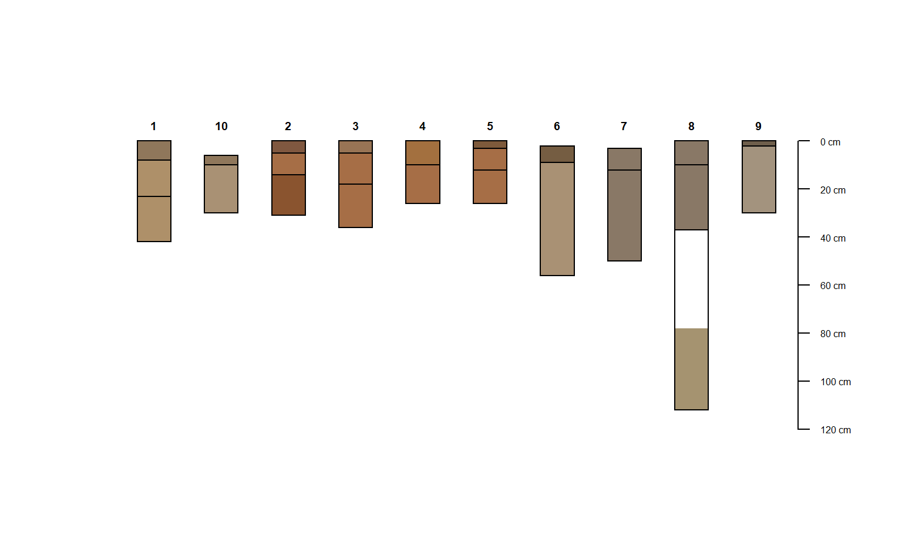
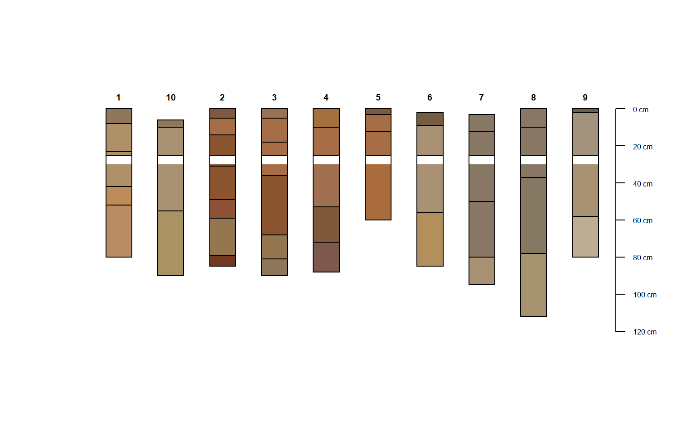
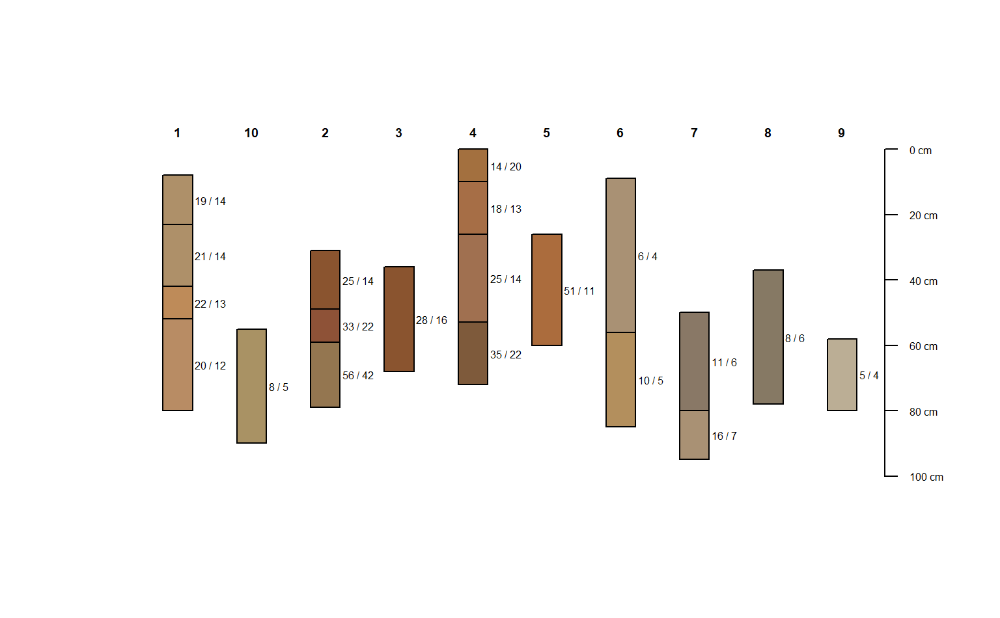
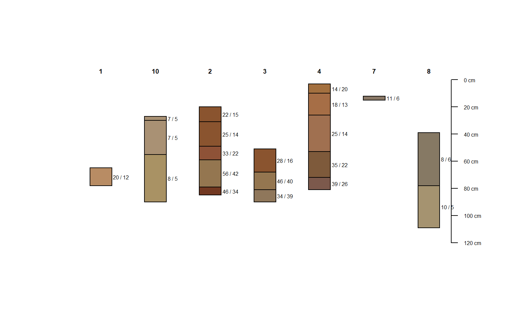
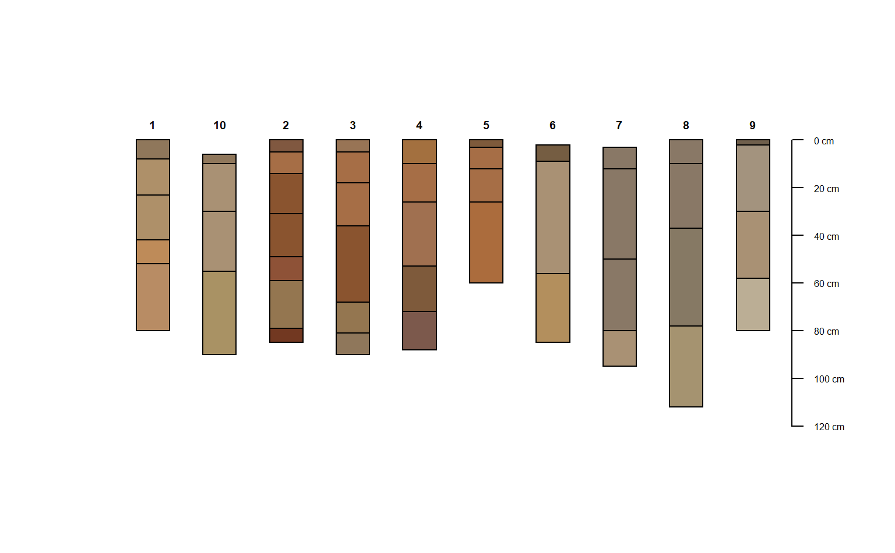

glomApply() is a function used for subsetting SoilProfileCollection objects by depth. It is a wrapper around glom which is intended to subset single-profile SPCs based on depth intervals/intersection.
glomApply works by accepting a function .fun as argument. This function is used on each profile to process a multi-profile SPC for input to glom (via profileApply). For each profile, .fun returns a 2-length numeric vector of top and bottom boundaries glom arguments: z1, z2.
glomApply essentially provides the option to programattically generate profile-specfic glom depths for a large SPC and handles iteration and rebuilding of a subset SPC object. Optional arguments include: truncate to cut the boundaries to specified [z1, z2]; invert to the portion outside [z1, z2], modality to either "all" horizons or "thickest" horizon in the glom interval. ... are various expressions you can run on the individual profiles using NSE, similar to mutate.
glomApply( object, .fun = NULL, truncate = FALSE, invert = FALSE, modality = "all", ..., chunk.size = 100 )
| object | A SoilProfileCollection |
|---|---|
| .fun | A function that returns vector with top and bottom depth ( |
| truncate | Truncate horizon top and bottom depths to |
| invert | Truncate horizon top and bottom depths to |
| modality | Aggregation method for glom result. Default |
| ... | A set of comma-delimited R expressions that resolve to a transformation to be applied to a single profile e.g |
| chunk.size | Chunk size parameter for |
A SoilProfileCollection.
Andrew G. Brown.
data(sp3) depths(sp3) <- id ~ top + bottom # constant depths, whole horizon returns by default plot(glomApply(sp3, function(p) c(25,100)))#> Warning: Lower boundary `z2` (100) is deeper than bottom depth of deepest horizon (80) in subset. (id: 1)#> Warning: Missing data in glom interval (actual/target: 57/75 cm (id: 1)#> Warning: `z2` (100) deeper than bottom depth of deepest horizon (80). (id: 1)#> Warning: Lower boundary `z2` (100) is deeper than bottom depth of deepest horizon (90) in subset. (id: 10)#> Warning: Lower boundary `z2` (100) is deeper than bottom depth of deepest horizon (85) in subset. (id: 2)#> Warning: Missing data in glom interval (actual/target: 71/75 cm (id: 2)#> Warning: `z2` (100) deeper than bottom depth of deepest horizon (85). (id: 2)#> Warning: Lower boundary `z2` (100) is deeper than bottom depth of deepest horizon (90) in subset. (id: 3)#> Warning: Missing data in glom interval (actual/target: 72/75 cm (id: 3)#> Warning: `z2` (100) deeper than bottom depth of deepest horizon (90). (id: 3)#> Warning: Lower boundary `z2` (100) is deeper than bottom depth of deepest horizon (88) in subset. (id: 4)#> Warning: Lower boundary `z2` (100) is deeper than bottom depth of deepest horizon (60) in subset. (id: 5)#> Warning: Missing data in glom interval (actual/target: 48/75 cm (id: 5)#> Warning: `z2` (100) deeper than bottom depth of deepest horizon (60). (id: 5)#> Warning: Lower boundary `z2` (100) is deeper than bottom depth of deepest horizon (85) in subset. (id: 6)#> Warning: Lower boundary `z2` (100) is deeper than bottom depth of deepest horizon (95) in subset. (id: 7)#> Warning: Lower boundary `z2` (100) is deeper than bottom depth of deepest horizon (80) in subset. (id: 9)# constant depths, truncated #(see aqp::trunc for helper function) plot(glomApply(sp3, function(p) c(25,30), truncate = TRUE))#> Warning: Invalid upper bound `z1` (100), returning `NULL` (id: 1)#> Warning: Invalid upper bound `z1` (100), returning `NULL` (id: 10)#> Warning: Invalid upper bound `z1` (100), returning `NULL` (id: 2)#> Warning: Invalid upper bound `z1` (100), returning `NULL` (id: 3)#> Warning: Invalid upper bound `z1` (100), returning `NULL` (id: 4)#> Warning: Invalid upper bound `z1` (100), returning `NULL` (id: 5)#> Warning: Invalid upper bound `z1` (100), returning `NULL` (id: 6)#> Warning: Invalid upper bound `z1` (100), returning `NULL` (id: 7)#> Warning: Invalid upper bound `z1` (100), returning `NULL` (id: 9)# constant depths, inverted + truncated (same as above) plot(glomApply(sp3, function(p) c(25,30), invert = TRUE, truncate=TRUE))# random boundaries in each profile plot(glomApply(sp3, function(p) round(sort(runif(2, 0, max(sp3))))))#> Warning: Lower boundary `z2` (82) is deeper than bottom depth of deepest horizon (60) in subset. (id: 5)#> Warning: Lower boundary `z2` (101) is deeper than bottom depth of deepest horizon (85) in subset. (id: 6)# random boundaries in each profile (truncated) plot(glomApply(sp3, function(p) round(sort(runif(2, 0, max(sp3)))), truncate = TRUE))#> Warning: Upper boundary `z1` (1) shallower than top depth (6) of shallowest horizon in subset. (id: 10)#> Warning: Lower boundary `z2` (88) is deeper than bottom depth of deepest horizon (85) in subset. (id: 2)#> Warning: Lower boundary `z2` (108) is deeper than bottom depth of deepest horizon (88) in subset. (id: 4)#> Warning: Missing data in glom interval (actual/target: 78/85 cm (id: 4)#> Warning: `z2` (108) deeper than bottom depth of deepest horizon (88). (id: 4)#> Warning: Lower boundary `z2` (86) is deeper than bottom depth of deepest horizon (60) in subset. (id: 5)#> Warning: Missing data in glom interval (actual/target: 34/60 cm (id: 5)#> Warning: `z2` (86) deeper than bottom depth of deepest horizon (60). (id: 5)# calculate some boundaries as site level attribtes sp3$glom_top <- profileApply(sp3, getMineralSoilSurfaceDepth)#> Warning: Profile (10) top depth is greater than zero.#> Warning: Profile (6) top depth is greater than zero.#> Warning: Profile (7) top depth is greater than zero.sp3$glom_bottom <- profileApply(sp3, estimateSoilDepth) # use site level attributes for glom intervals for each profile plot(glomApply(sp3, function(p) return(c(p$glom_top, p$glom_bottom))))